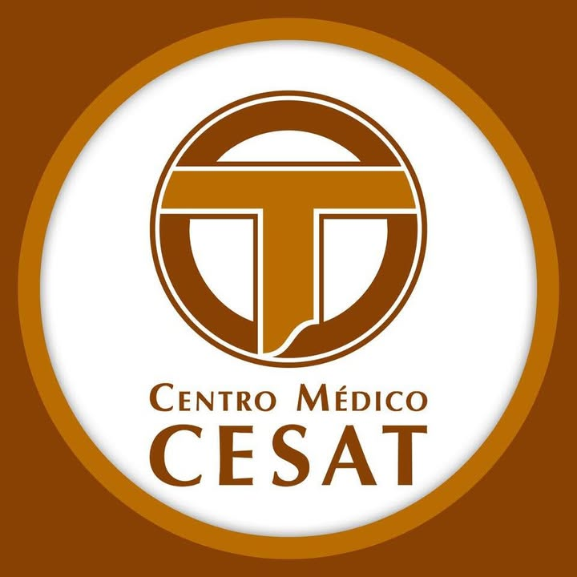

Atención
- Urgencias 24 Hrs
- Especialidades médicas
- Hospitalización
- Quirófanos
- Unidad de Maternidad

Centro Médico CESAT
Clínica médica con tecnología de punta, el mejor equipo de médicos, especialistas y las mejores instalaciones de Cd del Carmen.
Todos los díasUrgencias siempre abierta.
Convenios y empresas atendidas: por confirmar.
Horarios y costos por servicio: por confirmar con el centro médico.
Urgencias abre las 24 horas, todos los días, en Calle 55 No. 93, Col. Miami.
Aquí va el directorio con el nombre y la especialidad de cada médico.